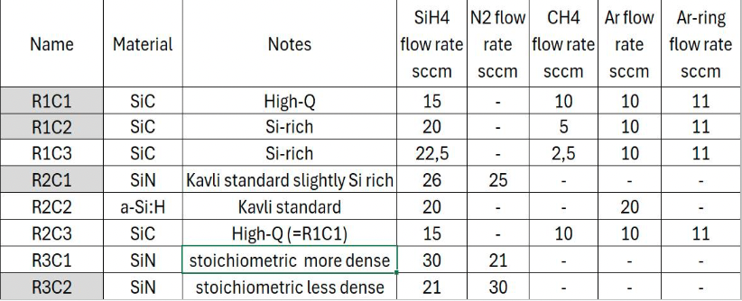
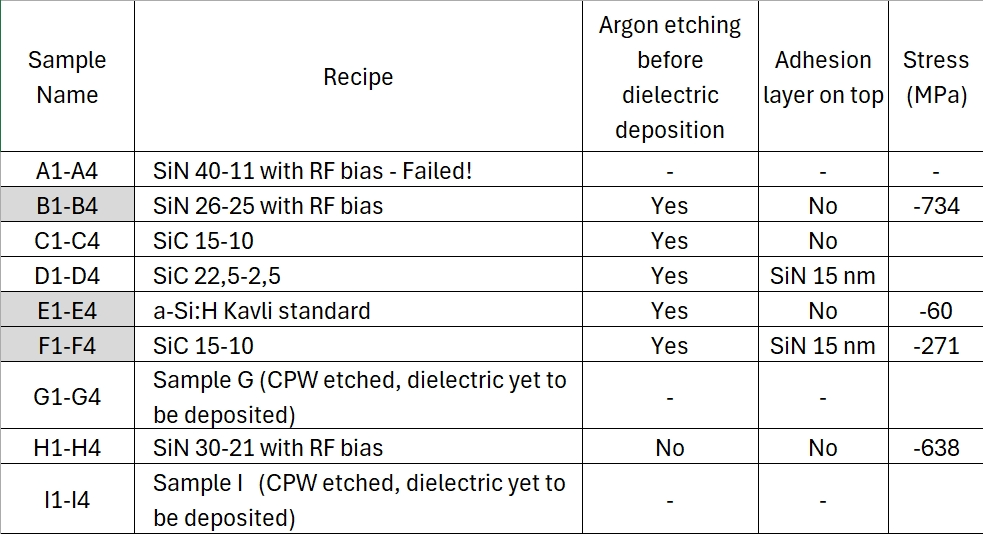
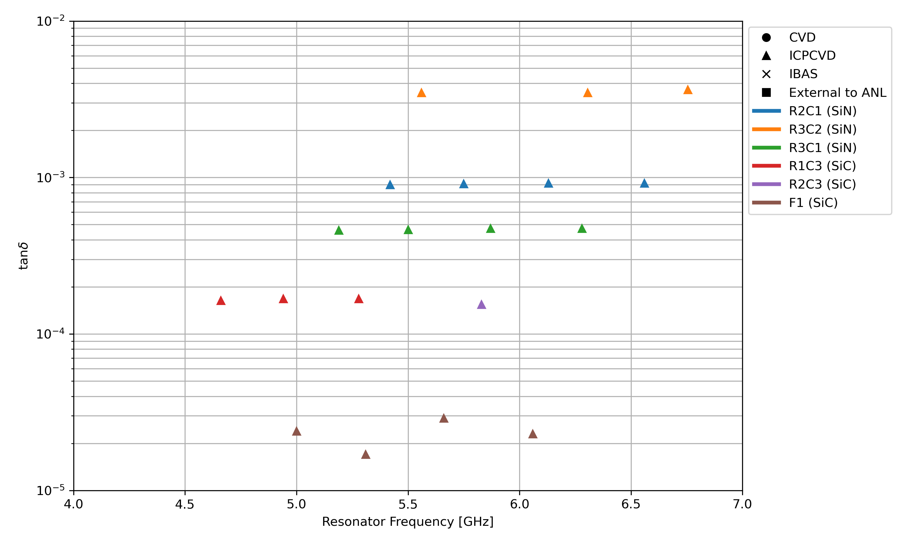
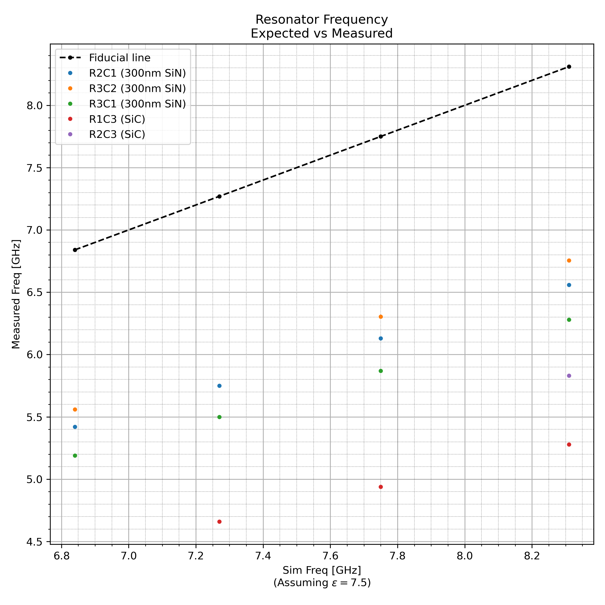

Landing page for the LANCE dielectric loss measurements.


The table below summarizes the results from the first and second batch of samples
| Sample | Dielectric | Conductor | Description | tanδ (10-4) | Date Tested | Comments | |
|---|---|---|---|---|---|---|---|
| R1C1 | SiC | NbTiN | High Q | None Found | 11Jul2025 | SEM showed delamination | |
| R1C2 | SiC | NbTiN | Si-Rich 1 | Non-Ideal Results | 16Jul2025 | SEM showed mild delamination | |
| R1C3 | SiC | NbTiN | Si-Rich 2 | 1.66 | 22Sep2025 | 3 rez, tested ADR thermalization | |
| R2C1 | SiN | NbTiN | Kavli Standard SiN | 9.1 | 26Jun2025 | 4 rez | |
| R2C2 | a-Si:H | NbTiN | Kavli Standard | - | - | Cracked during fab :( | |
| R2C3 | SiC | NbTiN | High Q (=R1C1) | 1.54 | 30Sep2025 | 1 rez, best from batch | |
| R3C1 | SiN | NbTiN | Stoichiometric, more dense | 4.65 | 22Aug2025 | 4 rez | |
| R3C2 | SiN | NbTiN | Stoichiometric, less dense | 35.0 | 23Jul2025 | 3 rez |
The table below summarizes the results from the third and second batch of samples.
NOTE: we are not testing B3, B4, E3, and E4 due to the fact that the lambda/4 samples
ended up in the lambda/2 space from testing F3 and F4. Our working theory for why this happened
could be due to the grounding etch at the end of the resonators not working out. We have the same
dielectrics with their respective lambda/2 measurements and cannot spare fridge cycles
so we are ok not testing those samples.
| Sample | Dielectric | Conductor | Description | tanδ (10-4) | Date Tested | Comments | |
|---|---|---|---|---|---|---|---|
| B1 | SiNx | NbTiN | Kavli Std w/ RF Bias | 3.68 | 20Apr2026 | 2 rez, rez2 and rez3 poor fits | |
| B2 | SiNx | NbTiN | Kavli Std w/ RF Bias | 3.67 | 3Mar2026/12Mar2026 | Tested w/ R1C3 first then w/ F3, saw 1 rez both times | |
| E1 | a-Si:H | NbTiN | Kavli Standard | 0.6038 | 7Apr2026 | 3 rez, 4th likely swallowed by box mode | |
| E2 | a-Si:H | NbTiN | Kavli Standard | - | - | - | |
| F1 | SiC l/2 | NbTiN | w/ SiNx capping layer | 0.62 | 24Mar2026 | Saw 4 rez | |
| F2 | SiC l/2 | NbTiN | w/ SiNx capping layer | - | - | - | |
| F3 | SiC l/4 | NbTiN | w/ SiNx capping layer | 0.79 | 12Mar2026 | 3 rez, tested w/ B2 | |
| F4 | SiC l/4 | NbTiN | w/ SiNx capping layer | 0.809 | 7Apr2026 | 1 rez, had another but fit bad, tested w/ E1 |

